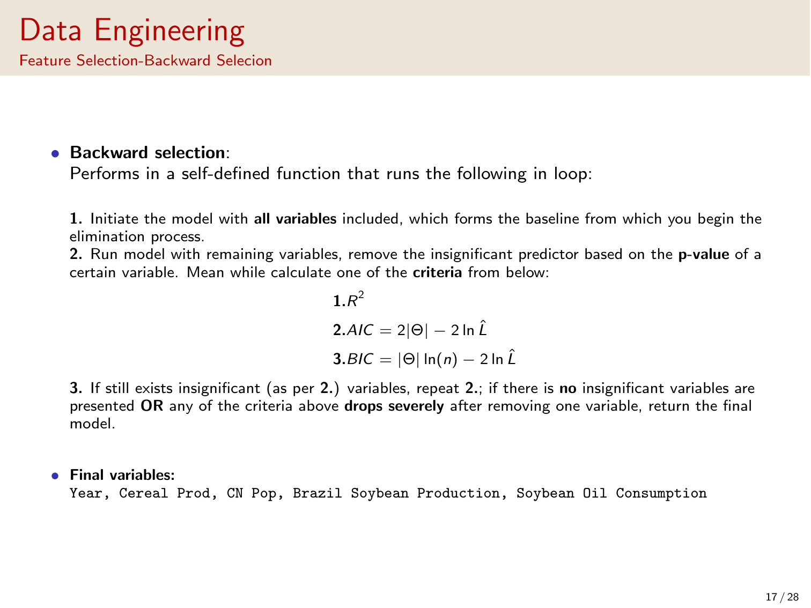

Catalog
Background and Motivation

Visualization: Historical Trend

Visualization-Independent_variables

Visualization-Correlation_heatmap
Visualization-Annual_feed_use
Visualization-Monthly_average_by_country

Visualization-Monthly_import
Visualization-import_by_country

Visualization-China_cereal_production

Visualization-Chinese_population

Visualization-Soybean_oil_consumption

Visualization-Soybean_production

Visualization-GDP_by_country

Evaluation-Goal_and_criteria

Data_Engineering-Data_cleaning
Data_Engineering-Feature_selection

Result-Random_forest_1

Result-Random_forest_2

Result-Random_forest_3

Conclusion-Comparison

⤓ Get notebook and TeX source file
©Lingyu Zhou 2024